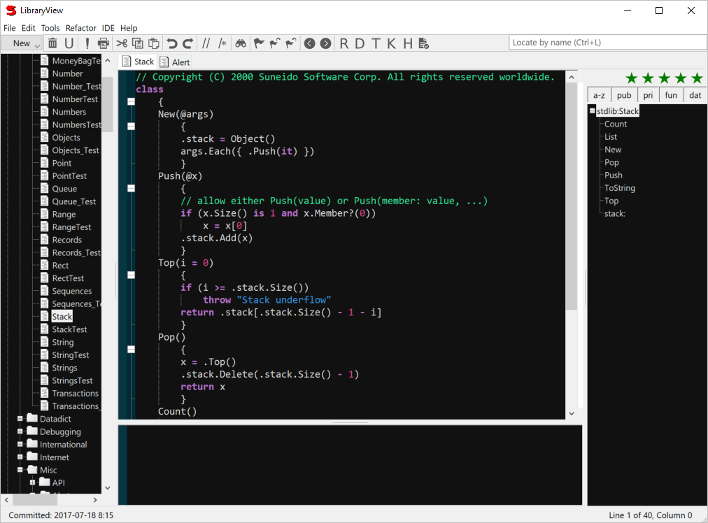

Library View
LibraryView is where you enter and edit your Suneido code.
You can use IDE > Color Scheme to choose a different color scheme, as shown in the LibraryView below.

The Locate field can be used to find records by name. It ignores case and underscores and also accepts just the capitalized letters e.g. enter "lvc" to find LibViewControl
The right hand outline pane shows either the members and parents for classes or objects, or the external references for functions. You can click on it to go to that item.
File Menu
- New Library...
- Use Library >
- Also available from right click in tree
- Unuse Library >
- Also available from right click in tree
- New Folder
- New Item
- Delete Item
- Undelete...
- This works from the database history. It may be slow for large databases. Note: this history is lost if you compact the database.
- Revert Item to >
- View Item as of >
- Diff Item to >
- Import Records...
- Import records from a text file created with LibIO, e.g. from Export Record.
- Export Record...
- Export the current record to a text file using LibIO.
Note: This appends to the text file so you can export several records to the same text file.
Also available from right click in tree.
- Print Item
- Print Library
Tools Menu
- Run (F9)
- Run the selected text, or if there is no selection the current group of lines, where groups of lines are separated by blank lines.
- Find in Folders...
- Find Next in Folders
- Find Previous in Folders
- Go To Definition (F12)
- Go to the definition of the word containing the insertion point.
If this fails, it will try appending "Control" or "Format" to the word.
- Create Test for Method (Ctrl+F12)
- Show Parameters (Ctrl+F11)
- Inspect (F4)
- Evaluates the selected text, or the whole record if there is no selection,
and then Inspect's the result, if it is an object.
- Show References to Current (Ctrl+R)
- Go To Documentation
- Run Associated Tests (Ctrl+T)
- Debug Test (Ctrl+K)
- Version History
- Version Control Settings
Context Menu
- Format Code
- Cleans up whitespace and removes unecessary semicolons.
- Go To Definition (F12)
- Go To Line (Ctrl+G)
- Line History
- Search version control for when the selected line was introduced.
- Show Parameters (Ctrl+F11)
- Show References (F11)
- Show/Hide Line Numbers
- Show/Hide Whitespace
- Unwrap (Ctrl+U)
- Removes the innermost quotes or brackets. Not 100% accurate.
- Watch Point (Ctrl+W)
- Print the selected variable or all the locals when execution passes this point.
- Break Point (Ctrl+B)
- Stop and show the debugger at this point.
- Clear All Points
- Comment Lines (Ctrl+/)
- Comment Selection (Shift+Ctrl+/)
- Fold All
- Unfold All
- Show/Hide Fold Margin
- Move Lines Up (Shift+Ctrl+Up)
- Move Lines Down (Shift+Ctrl+Down)
- Flag (Ctrl+F2)
- Next Flag (F2)
- Previous Flag (Shift+F2)
Selection
Hold down the Alt key to do column selection.
Ctrl + click to multiple select.
Use the toolbar left and right arrows to go back or forward through selection locations.
Indenting
When lines are selected, Tab will increase their indent, and Shift+Tab will decrease their indent.